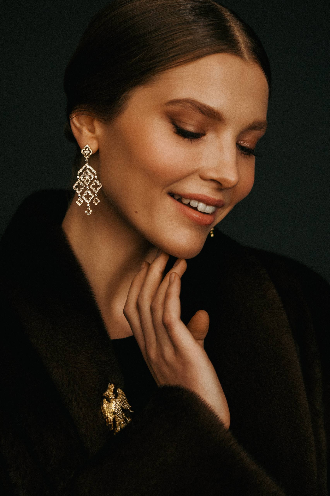
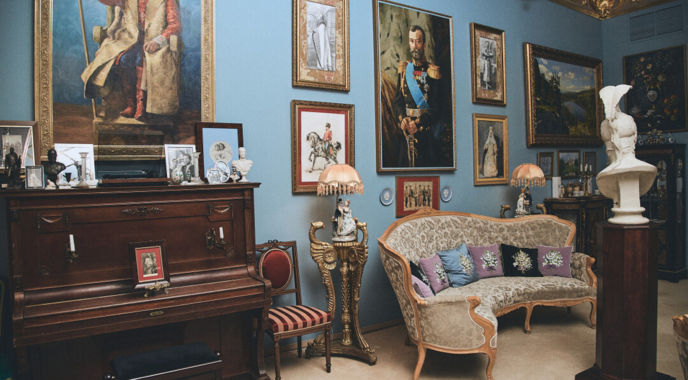
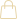
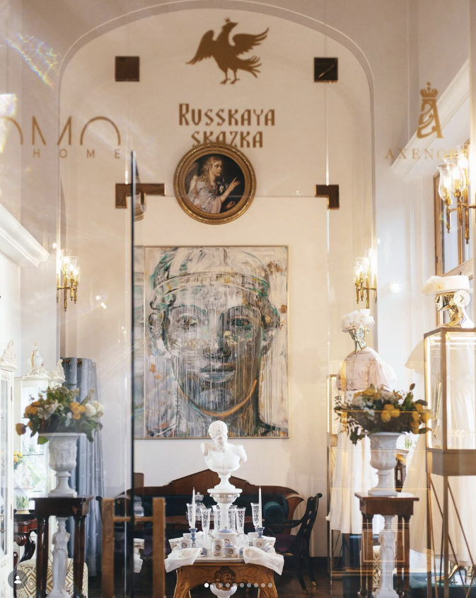
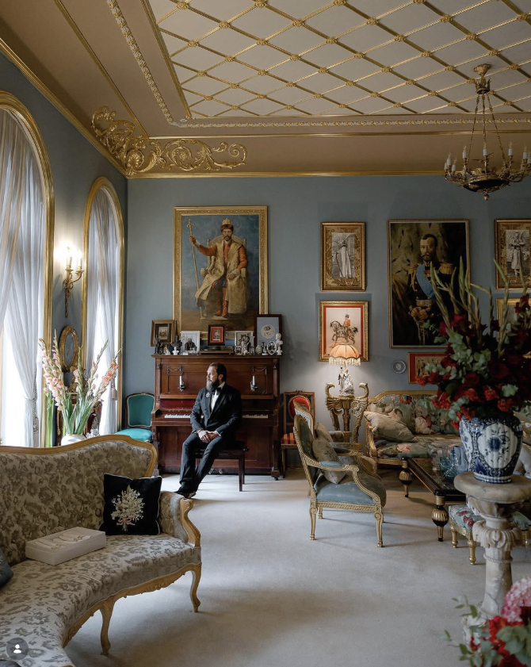
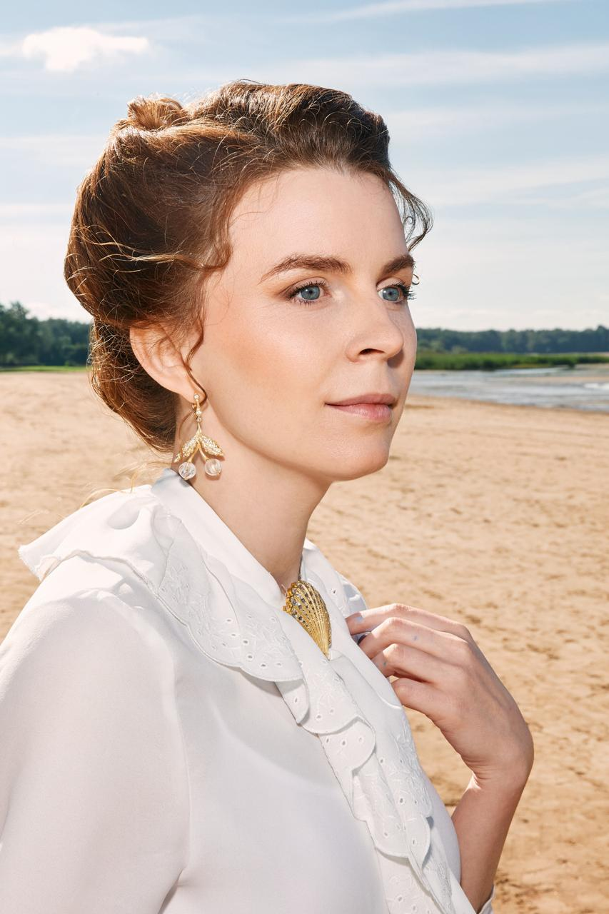
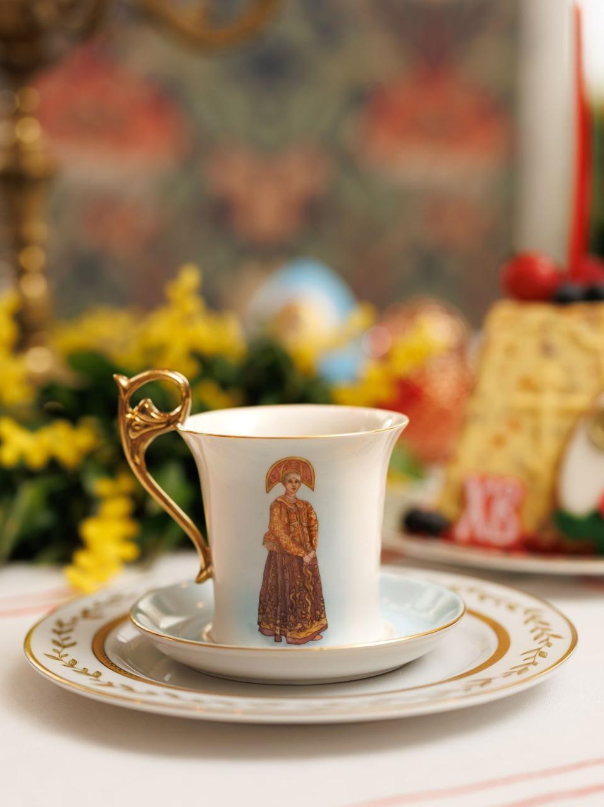

новая Коллекция

Princess
Anastasia
Коллекция "Princess Anastasia" посвящена культуре России конца XIX начала XX века - времени правления Александра III и начала правления Николая II.




Ювелирный дом Russkaya Skazka
Салоны ювелирного дома «Русская Сказка» в Санкт‑Петербурге и Москве задуманы так, чтобы украшения существовали в окружении живописи. Поэтому в интерьерах всегда есть картины: и классика конца XIX — начала XX века, и работы молодых современных художников, за которыми интересно наблюдать.
подробнееСалон

Я всегда отталкиваюсь от какой-то идеи или образа — литературного или живописного произведения, их исторических прототипов
Бутик

новая Коллекция

Princess
Anastasia
Коллекция "Princess Anastasia" посвящена культуре России конца XIX начала XX века - времени правления Александра III и начала правления Николая II.

смотреть коллекциюколлекция «Штандарт»
Коллекция вдохновлена морскими прогулками императорской семьи Николая II на яхте «Штандарт» — символе утончённого вкуса, статуса и безупречной эстетики.
домашняя коллекция

русские красавицы
Представляем вам уникальную серию чайных пар, посвященную женским традиционным костюмам.
Русская сказка
смотреть коллекции
Ювелирный дом Russkaya Skazka — современная интерпретация русского культурного наследия, воплощённая в ювелирном искусстве. Это наследие, которому дают новую жизнь, превращая историю в украшения, которые хочется носить

меню
1/2